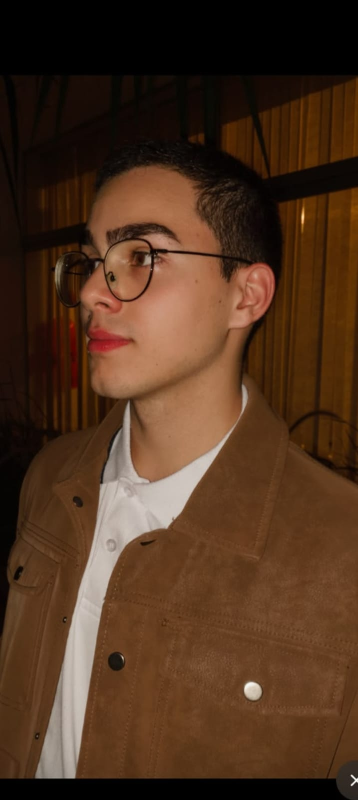

Olá, eu sou o Henrique! 👋
Atualmente divido minha rotina entre três atividades principais:
- Grupo de Jovens Raio de Luz: Servo no grupo da Paróquia Nossa Senhora Rainha dos Apóstolos.
- Jovem Aprendiz na TCS: Atuo na área de compliance ético, mas desenvolvo alguns projetos sobre indicadores etc o que me aproxima um pouco da área de estudo...
- Serviço Militar: Achei que seria bem melhor por pensar que ajudaria a formar caráter, foco e disciplina (não é muito bem como eu pensava).